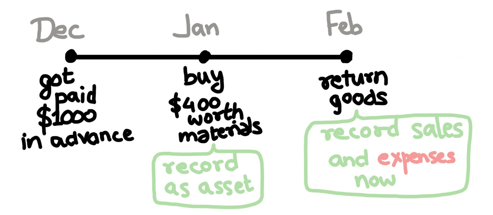

Accounting Concepts [WIP]
- Entity Concept
- Money Measurement Concept
- Going Concern Concept
- Consistency Concept
- Materiality Concept
- Dual Aspect (Double Entry Bookkeeping)
- Historical cost concept
- Realization
- Matching Concept
- Conservatism Concept
Entity Concept
Accounts are kept for an entity as distinct from the people who own, run or do business with the entity.Money Measurement Concept
Financial accounting deals only with things that can be represented in monetary termsGoing Concern Concept
An entity is expected to remain in operation for the indefinite futureConsistency Concept
An entity should use the same accounting methods and procedures from period to period unless it has a sound reason to change methodsMateriality Concept
An entity need only apply proper accounting to items that are material i.e. significant to potential users of the financial statementsDual Aspect (Double Entry Bookkeeping)
Historical cost concept
Realization
[Income Statement] When to recognize revenue? Deals with converting assets into cash equivalents.1. Revenue must be earned: Customer must receive goods/service
2. Revenue must be realizable: Customer paid / expected to pay
Revenue recognition principle
- IFRS recognizes revenue when risks and rewards of ownership are transferred
- GAAP recognizes revenue when it is earned
Matching Concept
[Income Statement]1. Expenses are recognised when revenue is recognised
2. Expenses for goods delivered in future recognised in future

Conservatism Concept
[Income Statement] [Balance Sheet] Recognize revenues only when reasonably certain, but expenses should be recognized as soon as reasonably possible.Last Updated: 9 June 2021